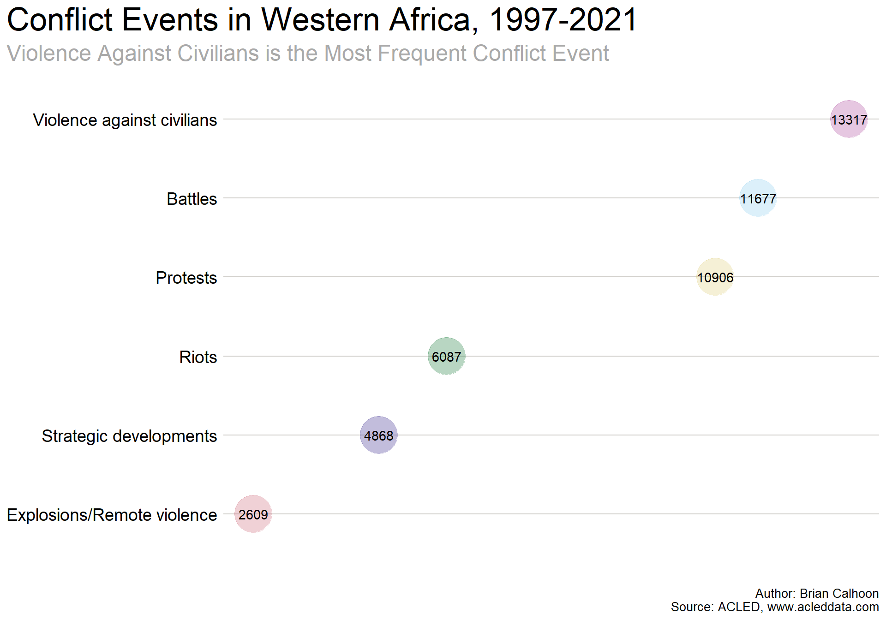
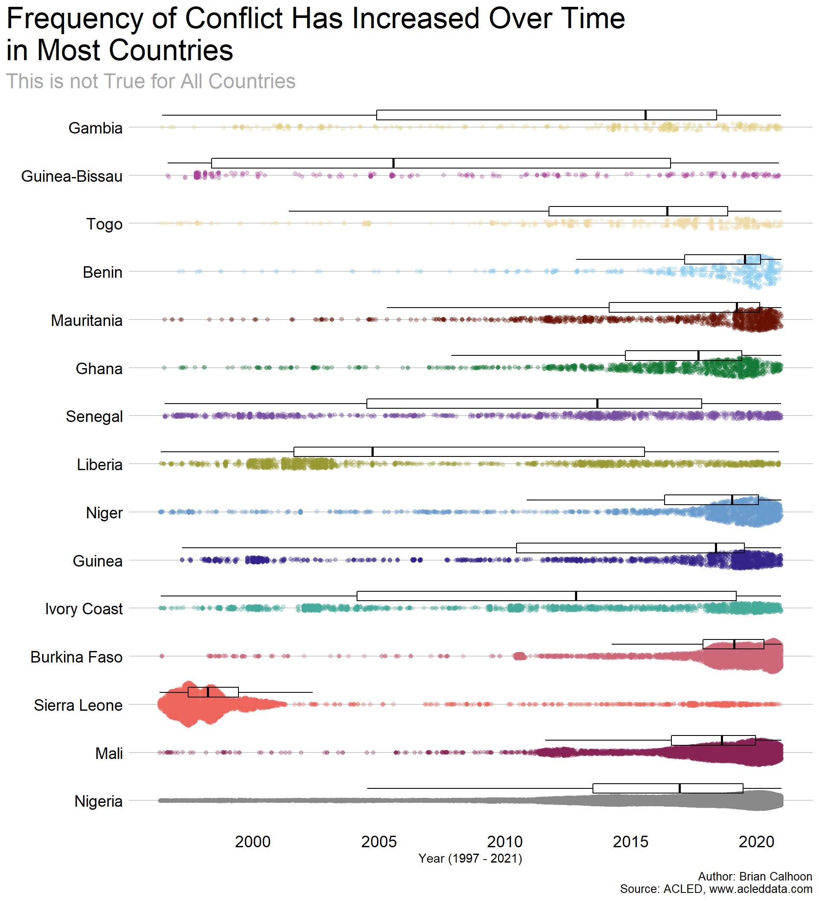

Exploring Western Africa Conflict Data With ACLED and R
Part 1: Descriptive Statistics Can Be Fun
Author
Brian Calhoon
Published
Invalid Date
1 Descriptive Statistics Say a lot
Descriptive statistics do not get too much attention, but they are important. First, they are where an analyst begins to explore their data. Second, when dealing with large data sets, descriptive statistics orient the analyst as well as the audience to the contours of the data. Third, they can make some interesting visuals on their own. In this first of three posts, they are front and center.
1.1 The Data
To demonstrate these features of descriptive statistics, we’re going to use data from The Armed Conflict Location and Event Data (ACLED) database that provides a user-friendly interface to access hundreds of thousands of conflict events around the world.
ACLED data is easy to access and free for a limited number of exports. With R it is easy to use Christoph Dworschak’s and Rob Williams’s acled.api package to export the data. It involves a personal security key so I won’t share the exact code here, but trust me when I say it is quite simple. You can visit their site at www.acleddata.com.
1.2 The Code
The data, visualizations, and analyses presented here were all coded in the R computer language. If you’re interested, the complete code and list of packages used are available on this github page, https://github.com/ManagementSystemsIntl/methods-corner.
1.3 What are we Looking at?
We’re going to explore ACLED’s conflict dataset for Western Africa from January 1, 1997 - September 10, 2021 which includes 49,464 observations across 31 variables. The map below shows the 15 countries that ACLED includes in Western Africa.
Code
#read in the data setdat <-read_xlsx("Y:/Private/brian.calhoon/ACLED data sets/WAconflicts202001.xlsx")#shapefiles for countriesafrica <- rnaturalearth::ne_countries(continent ="Africa" , returnclass ="sf")#Pull all the unique country names from the data set and make a new object, df_countriescountries <-unique(dat$country) #Generate iso codesiso <- raster::getData("ISO3")#ACLED data uses "Ivory Coast" instead of Cote d'Ivoire so we have to change thatiso[iso =="Côte d'Ivoire"] <-"Ivory Coast"#subset the iso object using the values in countriesiso3 <- iso[iso$NAME %in% countries,]a <- rnaturalearth::ne_countries(returnclass ="sf")w_africa <- rnaturalearth::ne_countries(country = iso3$NAME,returnclass ="sf")#oops, looks like Guinea Bissau is spelled differently in the shape fileb <-setdiff(iso3$NAME, w_africa$sovereignt)#Fix the spellingiso3[iso3 =="Guinea-Bissau"] <-"Guinea Bissau"#rerun the w_africa objectw_africa <- rnaturalearth::ne_countries(country = iso3$NAME,returnclass ="sf")#Generating a simple map using mapsf packagemapsf::mf_init(x = w_africa , theme ="agolalight" , expandBB =c(0,0,0,.2))mapsf::mf_map(x = africa , var ="sovereignt" , col ="lightgrey" , border ="grey" , add =TRUE)mapsf::mf_label(x = africa[!africa$sovereignt %in% w_africa$sovereignt,] , var ="sovereignt" , col ="grey" , cex =1 , overlap =FALSE)mapsf::mf_shadow(w_africa, add =TRUE)mapsf::mf_map(x = w_africa , var ="sovereignt" , type ="typo" , pal =c("#88CCEE", "#CC6677", "#DDCC77", "#117733", "#332288","#AA4499", "#44AA99", "#999933", "#882255", "#661100","#6699CC", "#888888", "#764E9F", "#ED645A", "#edd9a3") , alpha = .6 , border ="white" , lwd =2 , leg_pos ="n" , add =TRUE)mapsf::mf_label(x = w_africa , var ="sovereignt" , col ="black" , cex =1 , family ="Corbel" , overlap =FALSE , halo =TRUE)mapsf::mf_inset_on(x ="worldmap", pos ="bottomright")mapsf::mf_worldmap(x = w_africa , cex =6 , pch =22)mapsf::mf_inset_off()mapsf::mf_layout(title ="West African Countries in Dataset" , credits =paste0("Author: Brian Calhoon\n" , "Sources: ACLED, www.acleddata.com;" , "rnaturalearth") , scale =FALSE , arrow =TRUE , frame =FALSE)
The fifteen countries included in ACLED’s Western Africa dataset.
2 The First Exploratory Plots
An easy way to start is to group the data by a category that is easy to grasp. So, we’ll group the data by event_type and country and generate counts of events. This will show us aggregate numbers for events by type and then by country.
Code
#Make an object that groups events by event_typedat_events <- dat %>%group_by(event_type) %>%summarize(Count =n()) #Plot the object and organize it by Countggplot(dat_events , aes(Count, reorder(event_type, Count) , color = event_type))+geom_point(size =14 , alpha = .3) +geom_text(aes(label = Count) , color ="#000000") +theme.plot() +theme(legend.position ="none" , axis.text.x =element_blank() , axis.title.y =element_blank())+ggtitle("Conflict Events in Western Africa, 1997-2021" , subtitle ="Violence Against Civilians is the Most Frequent Conflict Event")+labs(y ="" , x ="" , caption ="Author: Brian Calhoon\n Source: ACLED, www.acleddata.com")

There were more cases of violence against civilians than any other type of conflict from 1997-2021.
There are more than 13,000 events categorized as “Violence against civilians”! How are these events divided up across the countries in our dataset?
Code
#Make an object that groups events by countrydat_country <- dat %>%group_by(country) %>%summarize(Count =n()) #Plot the object and organize it by Countggplot(dat_country , aes(Count, reorder(country, Count) , color = country , fill = country , alpha = .3)) +geom_point(size =14) +geom_text(aes(label = Count) , color ="#000000") +theme.plot() +ggtitle("Conflict Events by Country " , subtitle="Nigeria Has Nearly 4x as Many Events as the Next Closest Country") +labs(x ="" , y ="" ,caption ="Author: Brian Calhoon\n Source: ACLED, www.acleddata.com") +theme(legend.position ="none")
Nigeria has the most incidents of conflict while Guinea-Bissau and Gambia have the least.
As we can see, Nigeria has as many conflict events recorded in ACLED’s dataset as the next five countries combined. We can break down these counts by country and event to see what kinds of conflict are occurring in each country.
Code
#Here we're going to map 6 plots. I'd use facet_grid(), but I don't know how to make the charts reorder for each facet. So, I iterate over a list of six ggplots using purrr::map()#redefine the object dat#My type vectortype <-unique(dat$event_type)#My function for filtering by typetype_fun <-function(x){ dat %>%filter(event_type == {{x}}) %>%group_by(country, event_type) %>%summarize(Count =n())}#Now run it for realz <-map(type, ~type_fun(.x))#Plot the object and organize it by Count. The facet_wrap function generates six charts, one for each of the event typesplot_fun <-function(x) {ggplot(x , aes(Count, reorder(country, Count) , color = country , fill = country)) +geom_point(size =5 , alpha = .3) +geom_text(aes(label = Count) , color ="#000000") +theme.plot() +theme(legend.position ="none" , axis.text.x =element_blank())+ggtitle(x[[2]]) +labs(x ="" , y ="")}six_plot <-map(z, ~plot_fun(.x))#This worksplot_row <- cowplot::plot_grid(plotlist = six_plot , nrow =3 , ncol =2 , label_size =14 , label_fontface ="plain" , label_fontfamily ="Corbel")title <-ggdraw() + cowplot::draw_label("Types of Conflict Events in Each Country" , fontface ='plain' , fontfamily ="Corbel" , size =26 , x =0 , hjust =0 ) +theme(# add margin on the left of the drawing canvas,# so title is aligned with left edge of first plotplot.margin =margin(0, 0, 0, 7) )caption <-ggdraw() + cowplot::draw_label("Author: Brian Calhoon; Source: ACLED, www.acleddata.com" , fontface ="plain" , fontfamily ="Corbel" , size =10 , hjust =-.5)plot_grid( title, plot_row, caption,ncol =1,# rel_heights values control vertical title marginsrel_heights =c(0.1, 1))
When looking at the distribution of conflict types by country Nigeria has the highest counts in five of the six categories.
Coding makes it easy to generate a separate chart for each variable of event_type. In five out of the six cases we can see that Nigeria remains the most frequent event country. However, in Strategic Developments Sierra Leone comes out in front. Now we have a sense of what kinds of conflict events occur in each country.
2.1 Distribution of Conflict by Country Over Time
Since we’re dealing with time it is useful to know if all the events occurred at the same time or if they’re distributed over the 24 years in our dataset. We could create a histogram, but they are kind of boring. So, instead we’ll combine a jittered plot to show frequency of events over time with a boxplot. This makes it easy to see when and where conflict ebbed and flowed.
Code
#Add a date column that is formatted as a date columndat$dates <-ymd(dat$event_date) #Plot conflict over time by country with a box plot over scattered points (sina chart)ggplot(dat, aes(x = forcats::fct_infreq(country), y = dates , color =factor(country) , fill =factor(country))) +geom_sina(method ="density" , alpha = .3) +geom_boxplot(width = .2 , color ="#000000" , fill =NA , size = .5 , outlier.shape =NA , position =position_nudge(.25)) +coord_flip()+theme.plot() +theme(legend.position ="none" , plot.title.position ="plot") +ggtitle("Frequency of Conflict Has Increased Over Time in Most Countries" , subtitle ="This is not True for All Countries") +labs(y ="Year (1997 - 2021)" , x ="" , caption ="Author: Brian Calhoon\n Source: ACLED, www.acleddata.com")

Seeing the distribution of conflict over time and country helps us understand the contours of the dataset better.
So, those countries with few events almost have a straight line of dots (near the top). The wider groupings of dense dots means more conflict incidents (Sierra Leone in the late 1990s and Nigeria from 2014 - 2021, for example). By including the boxplot we can easily see where on the timeline a country reaches half of its total events. This provides the reader an easy way to understand the distribution of conflict over time for each country.
Another fun way to view this same distribution is to animate a chart that allows us to see the change over time.
My first attempt just showed the line graph by day, but that doesn’t highlight the long-term trends as well as grouping by month. So, before animating the chart, I did some data wrangling to group by event type, months, and years.
2.2 An Animated Line Chart of Conflict Events
Code
#Add a date column that is formatted as a date columndat$dates <-ymd(dat$event_date) #create the data object that we needdat_event_daily <- dat %>%group_by(year, event_type, dates) %>%summarize(number =n())dat_event_daily$dates <- lubridate::ymd(dat_event_daily$dates)#group by monthsdat_event_daily2 <-ungroup(dat_event_daily) %>%mutate(month = lubridate::month(dat_event_daily$dates) , year = lubridate::year(dat_event_daily$dates) , myr = lubridate::my(paste0(month, "-", year))) #create the summary columndat_event_daily3 <- dat_event_daily2 %>%group_by(year, myr, event_type) %>%summarize(count =sum(number))#make the plot and then animate itevents_month_gif <-ggplot(dat_event_daily3 , aes(myr, count, color = event_type)) +geom_line(size =1 , alpha =.5 )+geom_text(aes(x =ymd("2005-01-01") #add in the year on the plot , y =275 , label =as.integer(year)) , hjust =1 , vjust =1 , alpha = .2 , col ="#63666A" , size =20) +scale_x_date(date_breaks ="5 years" , date_labels ="%Y")+scale_y_continuous(limits =c(0, 350))+theme.plot() +guides(color =guide_legend(title ="Event Type"))+theme(legend.position ="top" , legend.title =element_text("Event\n Type") , plot.title.position ="plot") +ggtitle("Number of Conflict Events Over Time")+labs(x ="Years" , y ="Number of Conflict Events" , col ="Event Type" , caption ="Author: Brian Calhoon\n Source: ACLED, www.acleddata.com") +transition_reveal(myr) +#first step of the animationease_aes("linear")#this creates the final animationevents_month_gif <- gganimate::animate(events_month_gif , fps =4 , end_pause =10)anim_save("events_month_gif.gif")events_month_gif
Animating the data can draw a viewer’s attention to it and highlight peaks and valleys in conflict counts.
While you cannot take away precise details from the animation, it tells the basic story of a lot of conflict initially that tapers off for most of the aughts and then ramps back up in the tens and stays high for the start of the twenties. It also catches your eye in a way that a static chart or table does not.
3 Concluding thoughts
That’s all for now. As you can see, descriptive statistics can tell us a lot about our dataset and help us move into more complex layers of analysis. With a little creativity descriptive statistics can even be fun and eye catching. If you are scared of statistics, don’t be. The most advanced statistical concept used in this post is addition, and the computer did that for me. This is only a glimpse into exploratory data analysis to get us going. Our next post will build on what has already been done by expanding the data exploration and conducting spatial operations. It will get more complicated than addition, but anyone can learn from this and reproduce it because the code is available.
At MSI, we use coding languages like R to ensure that our peers can retrace our steps and our clients receive the analysis as well as our final product. Thanks for reading.